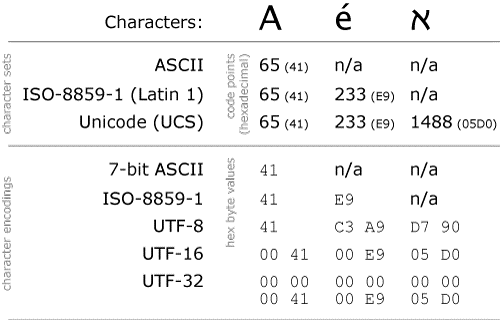

0x00 前言
第一次遇见字符串这个概念是在学 C 语言的时候，那时候觉得字符串也没有什么难的，不就是一个以 \0 结尾的 char 数组而已咯。后来在学习 PHP 的过程中也同样保持这个观念，不过在字符串还是纯英文的时候还是没什么问题的，但后面遇到要处理中文的时候就事故频发，然后搜索结果里的字符集、字符编码、多字节字符串、二进制安全各种概念搞得一头雾水，虽然最后的搜索结果都附有了解决方案但我还是觉得对于相关的知识需要理解和总结。
0x01 字符集
字符集（全称是编码字符集）是一个系统支持的所有抽象字符的集合。字符是各种文字和符号的总称，包括各国家文字、标点符号、图形符号、数字等。字符集都可以用「一张或多张二维表」表示，比如：ASCII 是很常见的一个字符集，一提起它我们应该都能想到下面这张图。我们可以看见每一个字符都对应有一个二进制编码。

因为ASCII 字符集上的编码和字符编码是一样的，然后很多刚学习的人就把字符集和字符编码给弄混淆了。但是实际上字符集和字符编码是不同的概念。
0x02 字符编码
由于历史原因，在早期字符集其实和字符编码是同义的，因为字符集的编码就是对应字符实际储存的值，直到 Unicode 的出现，因为 Unicode 有好几种不同的字符编码，比如：UTF-8、UFF-16、UTF-32。然后字符编码的概念就出来了，字符编码是字符集和实际存储数值之间的转换关系，也就是说字符编码是定义在字符集上的映射规则。然后我就开始有点头晕了/(ㄒoㄒ)/~~，字符编码 UTF-8 和字符集 Unicode 到底是什么关系？
实际上我们可以说UTF-8 是 Unicode 的一种实现方式。
我们可以查到在 Unicode 码表中，「国」字对应的十六进制编码是 0x56FD 但是如果我们新建一个文本文件，输入一个「国」字并用 UTF-8 的字符编码储存，然后以十六进制的方式查看该文件，我们会发现储存的并不是 0x56FD 而是 0xE59BBD。因为字符集的编码通过某种规则转换为了实际存储的数据，这里的某种规则即是字符编码。下面一图可以看出字符集和字符编码的不同。

既然字符集已经有编码了（而且很多字符集的字符编码和字符集上的编码一样），那为何要多此一举搞个字符编码出来？因为如果直接采用字符集上的编码，那么像 Unicode 之类的字符集，它的每个字符都需要三个字节储存，而对于一些常见的字符（比如：英文字母）来说用三个字节储存无疑是很浪费空间的。而通过 UTF-8 字符编码便可以将常见的字符采用较少的字节编码，而不常用的字符就采用较多的字节编码，达到节约储存空间的目的。
0x03 多字节字符串
PHP 在处理非英文的字符串时，部分字符串相关的函数可能会经常出现问题，因为 PHP 中处理字符串的函数默认假设所有字符都是 8 位字符，占用一个字节。而中文至少要用两个或三个字节储存（使用 UTF-8 编码），所以经常会出错。比如 strlen 函数在测试中文字符串时得到的是字节长度而不字符长度，所以我们应该利用 mbstring 拓展 提供的多字节字符串函数进行处理。
0x04 二进制安全
在浏览字符串处理函数的过程中我们常常会看到一个词「二进制安全」，听着感觉很高大上的样子然后网上对它的解释如下：
二进制安全是一个主要用来处理字符串操作的编程术语。二进制安全功能本质上是把输入当作一个没有任何特殊的原生流，其在操作上应包含一个字符所能有的256种可能的值（假设为8为字符）。
听着有点似懂非懂的样子，但和 Ｃ 语言的字符串作对比之后就比较明白了。
C 字符串中的字符必须符合某种编码（比如 ASCII），并且除了字符串的末尾之外，字符串里面不能包含空字符，否则最先被程序读入的空字符将被误认为是字符串结尾 ——这些限制使得 C 字符串只能保存文本数据，而不能保存像图片、音频、视频、压缩文件这样的二进制数据。
也就是说在二进制安全的函数操作里 \0 并不会看做字符串的结尾，字符串中所有的数据都没有特殊的含义。所以 PHP 的 strlen 函数能获取包含空字符的字符串长度，而 C 语言却不行。当然 PHP 里也有非二进制安全的函数，所以在使用某些函数前还是要注意函数是否是二进制安全的。如下例：
1 |
|
0x05 总结
写这篇文章的时候真的觉得很难写( ⊙ o ⊙ )啊！感觉自己还是说的不清不楚的样子,还没有网上的资料讲得好。但进行一下总结起码能够加强记忆吧/(ㄒoㄒ)/~~。有错的地方希望有人能够提出来（但我觉得应该都不会有人来看我的博客的233，更不会有评论）。